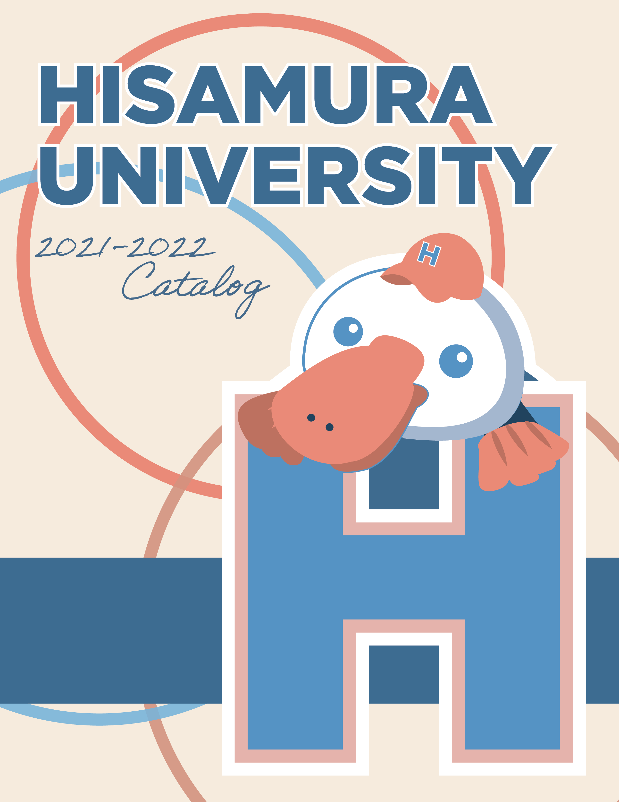
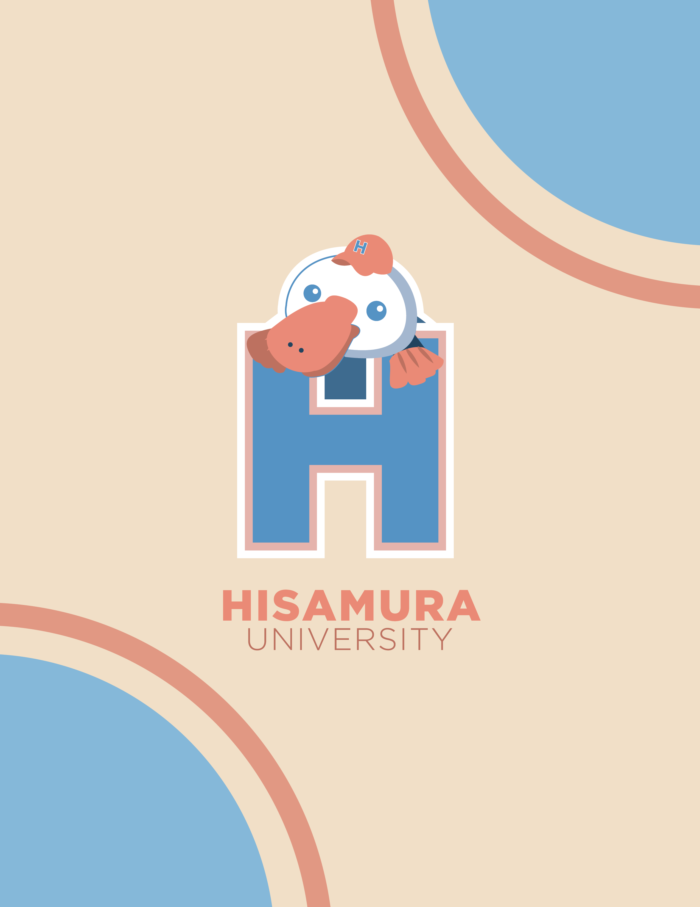
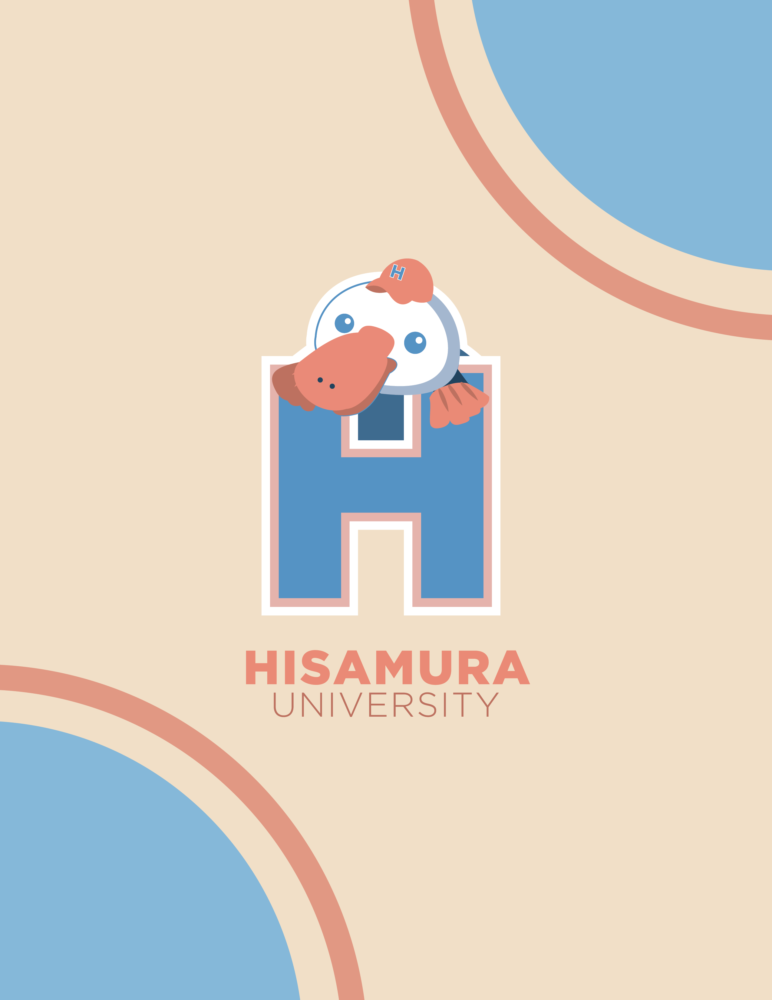
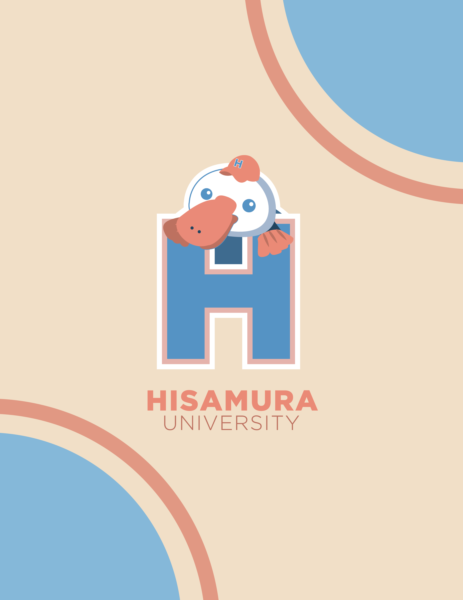

 

2021 | Application: Adobe Illustrator, Adobe InDesign
Hisamura Universityとはカリフォルニア州のサンディエゴに立地する私立大学である。創立5周年を記念に、Penny the Platypusというカモノハシをイメージとしたマスコットキャラクターが新たに紹介された。このカタログデザインは新しいマスコットをテーマにしたグッズ商品を宣伝し、全体的なHisamura Universityの校風や生徒内の大学に対する誇りを向上させるために作られた。
• Hisamura大学の元気で明るい校風が反映されているようなカタログデザインを作成する。
• 大学の価値観や目標を視覚化したブランディングをデザインし、そのイメージを保つ。
• 明るく前向きな学校環境を構築するために生徒の関与を高める。
• 入学志願者数を増やすために学校の認知度を広める。
• グッズ商品の売り上げを伸ばす。
• キャンパス内で活発な学生活動を増やし、充実した大学生活を送れることを期待している学生。
• 将来Hisamura大学への進学を希望している、または検討している受験生。
ターゲットオーディエンスについて調査を行ったところ、学生の興味をつかむには明るく、 はっきりとしたパーソナリティがあるデザインが有効だと発覚した。他の大学と区別をつけるため、 カタログデザインには現代的なデザインを使用し、新鮮さを与える必要があった。
様々なスタイルや方向性を試すために何枚ものサムネイルスケッチが作成され、 デザインの構成を考えた。デザインの大まかなイメージがついたところ、スケッチをより具体的に描き、デザインをデジタル化する前に修正した。
カタログのデザインはAdobe InDesign でレンダリングされ、画像やテキストは8列のマスをもとに整理された。 プロジェクトの目的を概念的および審美的に達成するデザインを完成させるために何度も修正を繰り返した。 文字の読みやすさを検証するために何度も印刷のテストを行い、実際に手に取りサイズなどを確かめた。
